也紀念我們永遠的朋友 李士傑先生（Shih-Chieh Ilya Li）。
行事曆 (Calendar) on Drupal 7
先前在建置某網站時曾提過要有行事曆，也想過直接嵌入 Google Calendar 的方案，但對某些使用者而言並不友善，所幸該網站凍仁是建置在 Drupal 上的，只需將 Calendar 模組設定好即可，毋需再重新造輪子了。
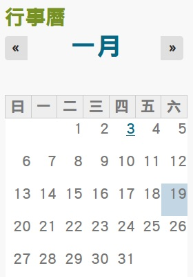
套用 Corolla 主題的迷你行事曆 (min-calendar)。
# 若要使用 Calendar 模組記得要連相依的 Date 及 Views 兩模組也一同補上。
1. 安裝相關模組
1. 安裝 Calendar 模組。
[ jonny@squeeze ~ ] $ sudo drush dl calendar [Enter] Project calendar (7.x-3.4) downloaded to /var/www/drupal/sites/all/modules/calendar.
2. 安裝 Date 模組。
[ jonny@squeeze ~ ] $ sudo drush dl date [Enter] Project date (7.x-2.6) downloaded to /var/www/drupal/sites/all/modules/date. [success] Project date contains 11 modules: date_migrate_example, date_migrate, date_views, date_repeat_field, date_repeat, date_popup, date_api, date_tools, date_context, date_all_day, date.
3. 安裝 Date Popup Authored 模組。
[ jonny@squeeze ~ ] $ sudo drush dl date_popup_authored [Enter] Project date_popup_authored (7.x-1.1) downloaded to /var/www/drupal/sites/all/modules/date_popup_authored.
4. 啟用 Calendar 模組。
[ jonny@squeeze ~ ] $ sudo drush en calendar [Enter]
5. 啟用 Date Popup Authored 模組。
[ jonny@squeeze ~ ] $ sudo drush en date_popup_authored [Enter] The following extensions will be enabled: date_popup_authored, date_popup Do you really want to continue? (y/n): y date_popup was enabled successfully. date_popup_authored was enabled successfully.
2. Calendar 應用
2.1. 新增「以建立日期為基準」的 Calendar View
若今天是想讓所有的文章 (node) 依造建立的時間點顯示在行事曆上，可以使用「A calendar view of the 'created' field in the 'node' base table.」，完成後會如 2.1.6 一般，此方案適合只需紀錄單一時間點的網站，例如：部落格、新聞、雜誌... 等等。
2.1.1. 新增 Calendar
1. 進入 Views 介面：首頁 » 管理 » 架構 » Views (https://example.tw/admin/structure/views)。
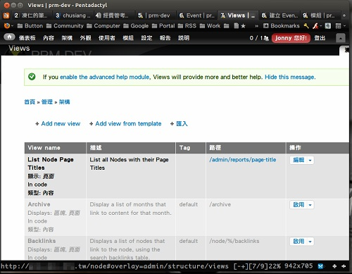
2. 點選 Add view from template (https://example.tw/admin/structure/views/add-template) 。
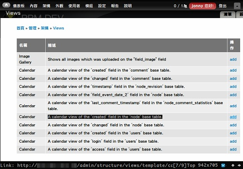
3. 點選「A calendar view of the 'created' field in the 'node' base table.」一項的 add。
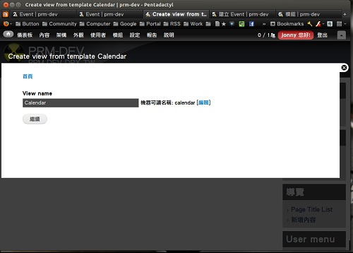
4. 設定 Calendar 名稱。
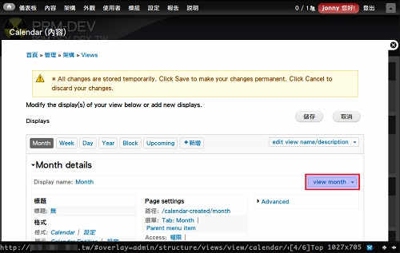
5. 點選 儲存 寫入後，再點選 view month 檢視成果。
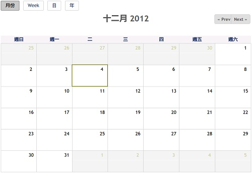
6. View: Calendar 新增完成。
2.1.2. 新增迷你行事曆 (mini-Calendar) 區塊 (block)
1. 進入區塊介面：首頁 » 管理 » 架構 (https://example.tw/admin/structure/block)。
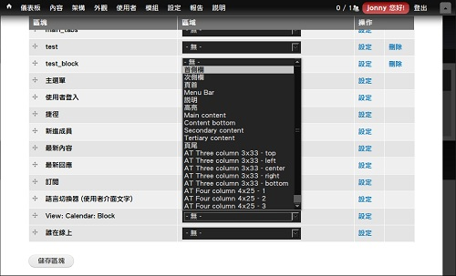
2. 將「View Calendar: Block」設定至首側欄。
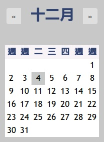
3. View: Calendar: Block 設定完成。
2.1.3. 修改星期翻譯
相信不少伙伴都發現上方的範例都有些小缺陷，那就是週日、一、五及六的日期怪怪的，這時只需自行改翻譯就可解決此問題。
- 週曰 → 日
- 週一 → 一
- 週五 → 五
- 週六 → 六
1. 進入翻譯介面：首頁 » 管理 » 設定 » 地區與語言 » 介面翻譯 (https://example.tw/admin/config/regional/translate/translate)。
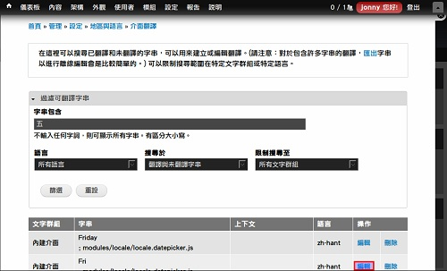
2. 搜尋週五並編輯 Fri。
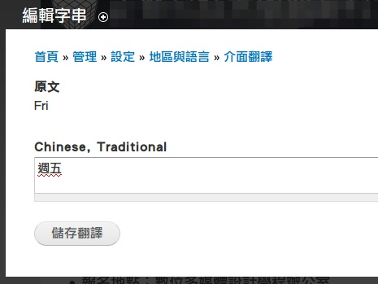
3. 手動更換為五。
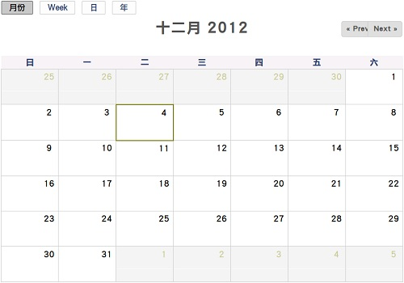
4. 修改後的 View: Calendar。
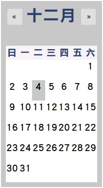
5. 修改後的 View: Calendar: Block。
2.2. 新增「有事件起迄為基準」的 Calendar View
若今天是想表示某個事件 (Event) 且擁有某範圍的時間點，則可以使用「A calendar view of the 'field_event_date' field in the 'node' base table.」 ...
2.2.1. 新增內容類型 Event
1. 進入內容類型介面：首頁 » 管理 » 架構 » 內容類型 (https://example.tw/admin/structure/types)。
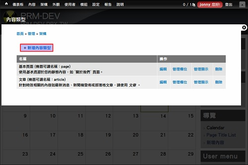
2. 點選 新增內容類型。
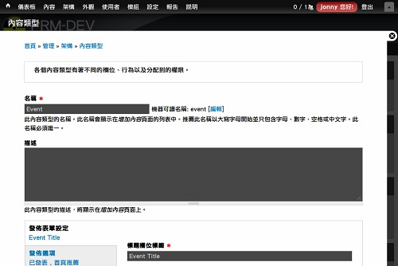
3. 設定 Event 內容類型的名稱 (Title)。
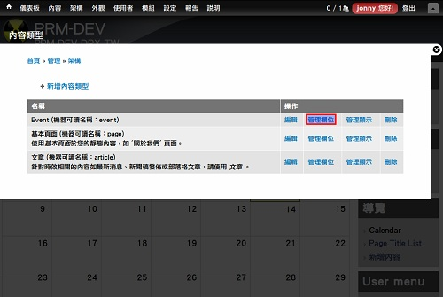
4. 管理 Event 欄位。
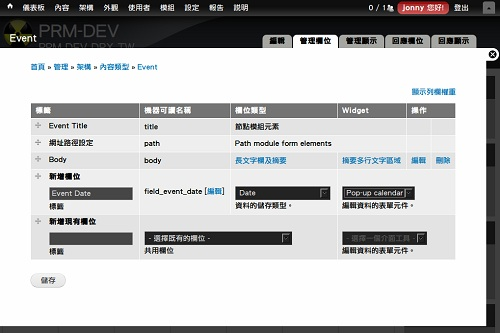
5. 新增 Event Date 欄位，切忌 機器可讀名稱 (Machine Name) 不可重復。
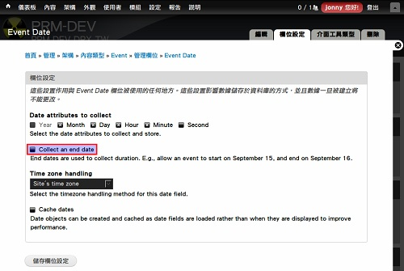
6. 進入 Event Date 欄位設定，並將「Collect an end date」一項打勾 。
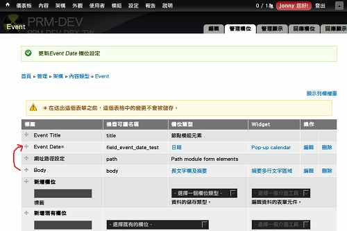
7. 更改欄位順序並點選 儲存。
2.2.2. 新增 Event 內容類型
1. 進入內容介面：首頁 » 管理 (https://example.tw/admin/content)。
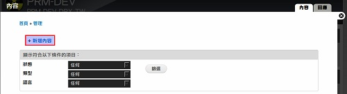
2. 新增內容。
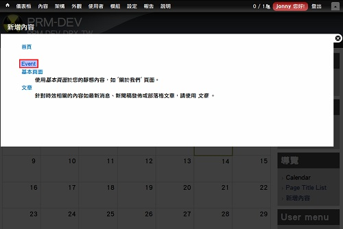
3. 內容類型選擇 Event。
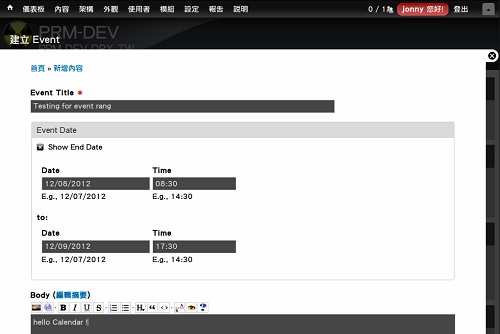
4. 新增有範圍的 Event。
2.2.3. 新增 Calendar Event
1. 進入 Views 介面：首頁 » 管理 » 架構 » Views (https://example.tw/admin/structure/views)。
2. 點選 Add view from template (https://example.tw/admin/structure/views/add-template)。
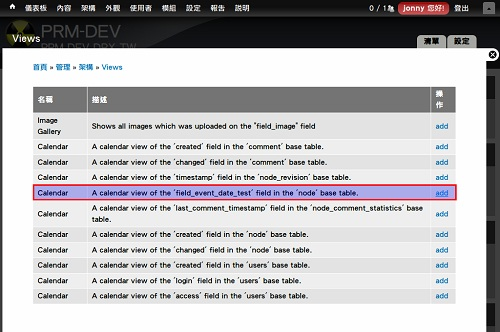
3. 點選「A calendar view of the 'field_event_date_test' field in the 'node' base table.」一項的 add 。
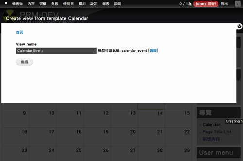
4. 設定 Calendar Event 名稱。
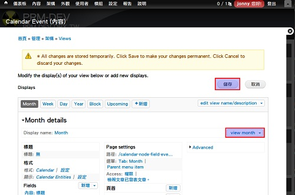
5. 點選 儲存 寫入後，再點選 view month 檢視成果。
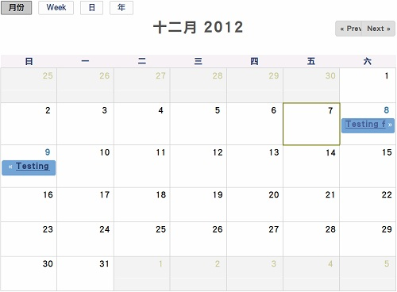
6. View: Calendar Event 新增完成。
相關連結：
- ★Calendar Block | drupal.org
★Pretty Calendar | drupal.org
★Drupal Calendar Setup on Vimeo
★How to Create a Mini Calendar in Drupal | eHow.com
資料來源：
專欄總覽


E-Mail：contact@openfoundry.org Address：台北市南港區研究院路2段128號 中央研究院資訊科學研究所 . 隱私權條款. 使用條款